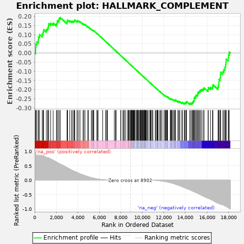
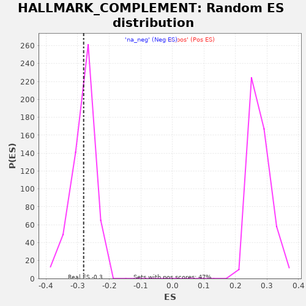

| | | Dataset | deseq_res_for_gsea |
| Phenotype | NoPhenotypeAvailable |
| Upregulated in class | na_neg |
| GeneSet | HALLMARK_COMPLEMENT |
| Enrichment Score (ES) | -0.28109187 |
| Normalized Enrichment Score (NES) | -0.9939495 |
| Nominal p-value | 0.44990548 |
| FDR q-value | 1.0 |
| FWER p-Value | 1.0 |
Table: GSEA Results Summary

Fig 1: Enrichment plot: HALLMARK_COMPLEMENT
Profile of the Running ES Score & Positions of GeneSet Members on the Rank Ordered List
| PROBE | GENE SYMBOL | GENE_TITLE | RANK IN GENE LIST | RANK METRIC SCORE | RUNNING ES | CORE ENRICHMENT | | 1 | PLG | | | 87 | 0.979 | 0.0135 | No |
| 2 | RHOG | | | 98 | 0.977 | 0.0312 | No |
| 3 | PIK3CG | | | 117 | 0.974 | 0.0484 | No |
| 4 | GZMB | | | 209 | 0.965 | 0.0614 | No |
| 5 | SERPINB2 | | | 340 | 0.947 | 0.0719 | No |
| 6 | S100A12 | | | 361 | 0.944 | 0.0884 | No |
| 7 | CD40LG | | | 456 | 0.924 | 0.1005 | No |
| 8 | GCA | | | 698 | 0.870 | 0.1033 | No |
| 9 | ADAM9 | | | 784 | 0.851 | 0.1145 | No |
| 10 | RBSN | | | 834 | 0.840 | 0.1275 | No |
| 11 | APOA4 | | | 1086 | 0.786 | 0.1283 | No |
| 12 | SERPINC1 | | | 1203 | 0.783 | 0.1365 | No |
| 13 | CLU | | | 1274 | 0.772 | 0.1470 | No |
| 14 | IRF7 | | | 1303 | 0.767 | 0.1598 | No |
| 15 | VCPIP1 | | | 1486 | 0.735 | 0.1634 | No |
| 16 | ATOX1 | | | 1720 | 0.689 | 0.1633 | No |
| 17 | CD36 | | | 2018 | 0.626 | 0.1585 | No |
| 18 | KCNIP2 | | | 2097 | 0.607 | 0.1656 | No |
| 19 | NOTCH4 | | | 2111 | 0.604 | 0.1761 | No |
| 20 | GNG2 | | | 2241 | 0.581 | 0.1798 | No |
| 21 | CFH | | | 2265 | 0.577 | 0.1894 | No |
| 22 | USP15 | | | 2378 | 0.555 | 0.1935 | No |
| 23 | LTA4H | | | 3007 | 0.433 | 0.1667 | No |
| 24 | MMP8 | | | 3012 | 0.432 | 0.1745 | No |
| 25 | RAF1 | | | 3060 | 0.420 | 0.1798 | No |
| 26 | RNF4 | | | 3256 | 0.383 | 0.1761 | No |
| 27 | PIK3CA | | | 3419 | 0.348 | 0.1736 | No |
| 28 | KLKB1 | | | 3530 | 0.330 | 0.1736 | No |
| 29 | GNB2 | | | 3639 | 0.311 | 0.1734 | No |
| 30 | PRDM4 | | | 3705 | 0.300 | 0.1754 | No |
| 31 | KLK1 | | | 3721 | 0.297 | 0.1802 | No |
| 32 | ME1 | | | 3940 | 0.264 | 0.1730 | No |
| 33 | LAP3 | | | 3954 | 0.260 | 0.1771 | No |
| 34 | FCN1 | | | 4093 | 0.235 | 0.1738 | No |
| 35 | GMFB | | | 4215 | 0.216 | 0.1711 | No |
| 36 | F2 | | | 4489 | 0.180 | 0.1593 | No |
| 37 | GNAI2 | | | 4569 | 0.169 | 0.1581 | No |
| 38 | TIMP1 | | | 4675 | 0.154 | 0.1551 | No |
| 39 | PPP2CB | | | 4931 | 0.121 | 0.1432 | No |
| 40 | LTF | | | 4998 | 0.113 | 0.1416 | No |
| 41 | PREP | | | 5262 | 0.086 | 0.1286 | No |
| 42 | PHEX | | | 5347 | 0.078 | 0.1254 | No |
| 43 | GNAI3 | | | 5435 | 0.069 | 0.1219 | No |
| 44 | CALM1 | | | 5450 | 0.068 | 0.1223 | No |
| 45 | XPNPEP1 | | | 5490 | 0.065 | 0.1214 | No |
| 46 | DOCK10 | | | 5782 | 0.041 | 0.1060 | No |
| 47 | USP8 | | | 5813 | 0.040 | 0.1050 | No |
| 48 | PLA2G4A | | | 5895 | 0.036 | 0.1012 | No |
| 49 | CD46 | | | 6317 | 0.016 | 0.0781 | No |
| 50 | ZEB1 | | | 6605 | 0.008 | 0.0623 | No |
| 51 | RABIF | | | 6644 | 0.007 | 0.0603 | No |
| 52 | CD55 | | | 6746 | 0.005 | 0.0547 | No |
| 53 | LIPA | | | 6770 | 0.005 | 0.0536 | No |
| 54 | CSRP1 | | | 7397 | 0.000 | 0.0187 | No |
| 55 | PLAUR | | | 7514 | 0.000 | 0.0123 | No |
| 56 | CDK5R1 | | | 7522 | 0.000 | 0.0119 | No |
| 57 | CDH13 | | | 7564 | 0.000 | 0.0096 | No |
| 58 | DUSP5 | | | 7985 | 0.000 | -0.0137 | No |
| 59 | SERPINA1 | | | 8009 | 0.000 | -0.0150 | No |
| 60 | PCLO | | | 8192 | 0.000 | -0.0251 | No |
| 61 | GRB2 | | | 8264 | 0.000 | -0.0291 | No |
| 62 | MAFF | | | 8346 | 0.000 | -0.0336 | No |
| 63 | FN1 | | | 8462 | 0.000 | -0.0400 | No |
| 64 | DOCK4 | | | 8639 | 0.000 | -0.0498 | No |
| 65 | CA2 | | | 8706 | 0.000 | -0.0535 | No |
| 66 | TIMP2 | | | 8729 | 0.000 | -0.0547 | No |
| 67 | PDP1 | | | 8772 | 0.000 | -0.0570 | No |
| 68 | F3 | | | 8858 | 0.000 | -0.0618 | No |
| 69 | PDGFB | | | 8923 | 0.000 | -0.0653 | No |
| 70 | ITGAM | | | 8964 | -0.000 | -0.0675 | No |
| 71 | PSMB9 | | | 9000 | -0.000 | -0.0695 | No |
| 72 | CASP10 | | | 9016 | -0.000 | -0.0703 | No |
| 73 | TNFAIP3 | | | 9025 | -0.000 | -0.0708 | No |
| 74 | C4BPB | | | 9092 | -0.000 | -0.0744 | No |
| 75 | DGKG | | | 9145 | -0.000 | -0.0773 | No |
| 76 | APOBEC3G | | | 9160 | -0.000 | -0.0781 | No |
| 77 | C1R | | | 9173 | -0.000 | -0.0788 | No |
| 78 | HPCAL4 | | | 9215 | -0.000 | -0.0811 | No |
| 79 | APOC1 | | | 9274 | -0.000 | -0.0843 | No |
| 80 | IRF2 | | | 9319 | -0.000 | -0.0867 | No |
| 81 | COL4A2 | | | 9428 | -0.000 | -0.0928 | No |
| 82 | SH2B3 | | | 9446 | -0.000 | -0.0937 | No |
| 83 | CBLB | | | 9527 | -0.000 | -0.0981 | No |
| 84 | CR2 | | | 9539 | -0.000 | -0.0988 | No |
| 85 | C1S | | | 9569 | -0.000 | -0.1004 | No |
| 86 | CFB | | | 9586 | -0.000 | -0.1013 | No |
| 87 | PSEN1 | | | 9610 | -0.000 | -0.1025 | No |
| 88 | CASP4 | | | 9684 | -0.000 | -0.1066 | No |
| 89 | CD59 | | | 9768 | -0.000 | -0.1112 | No |
| 90 | GNGT2 | | | 9818 | -0.000 | -0.1139 | No |
| 91 | ERAP2 | | | 9867 | -0.000 | -0.1166 | No |
| 92 | MMP14 | | | 9873 | -0.000 | -0.1169 | No |
| 93 | CTSS | | | 9933 | -0.000 | -0.1202 | No |
| 94 | CTSC | | | 9962 | -0.000 | -0.1217 | No |
| 95 | L3MBTL4 | | | 9963 | -0.000 | -0.1217 | No |
| 96 | DPP4 | | | 10035 | -0.000 | -0.1257 | No |
| 97 | CEBPB | | | 10056 | -0.000 | -0.1268 | No |
| 98 | PRSS36 | | | 10060 | -0.000 | -0.1270 | No |
| 99 | CASP1 | | | 10107 | -0.000 | -0.1295 | No |
| 100 | C3 | | | 10162 | -0.000 | -0.1325 | No |
| 101 | CPM | | | 10197 | -0.000 | -0.1344 | No |
| 102 | USP14 | | | 10229 | -0.000 | -0.1361 | No |
| 103 | LAMP2 | | | 10269 | -0.000 | -0.1383 | No |
| 104 | IRF1 | | | 10283 | -0.000 | -0.1390 | No |
| 105 | MSRB1 | | | 10300 | -0.000 | -0.1399 | No |
| 106 | CCL5 | | | 10359 | -0.000 | -0.1431 | No |
| 107 | PPP4C | | | 10424 | -0.000 | -0.1467 | No |
| 108 | APOBEC3F | | | 10489 | -0.001 | -0.1502 | No |
| 109 | HSPA5 | | | 10605 | -0.001 | -0.1566 | No |
| 110 | PLAT | | | 10719 | -0.001 | -0.1629 | No |
| 111 | CTSL | | | 10751 | -0.002 | -0.1646 | No |
| 112 | TFPI2 | | | 10769 | -0.002 | -0.1655 | No |
| 113 | FCER1G | | | 10823 | -0.002 | -0.1684 | No |
| 114 | EHD1 | | | 10917 | -0.003 | -0.1735 | No |
| 115 | LYN | | | 10978 | -0.004 | -0.1768 | No |
| 116 | IL6 | | | 11196 | -0.008 | -0.1887 | No |
| 117 | CTSO | | | 11255 | -0.009 | -0.1918 | No |
| 118 | MMP15 | | | 11352 | -0.012 | -0.1969 | No |
| 119 | FYN | | | 11401 | -0.014 | -0.1993 | No |
| 120 | CTSD | | | 11432 | -0.015 | -0.2007 | No |
| 121 | PLA2G7 | | | 11465 | -0.016 | -0.2022 | No |
| 122 | GATA3 | | | 11612 | -0.022 | -0.2099 | No |
| 123 | RASGRP1 | | | 11692 | -0.026 | -0.2138 | No |
| 124 | MMP13 | | | 11760 | -0.029 | -0.2170 | No |
| 125 | PRCP | | | 11918 | -0.038 | -0.2250 | No |
| 126 | USP16 | | | 12082 | -0.048 | -0.2332 | No |
| 127 | SIRT6 | | | 12108 | -0.049 | -0.2337 | No |
| 128 | OLR1 | | | 12125 | -0.050 | -0.2336 | No |
| 129 | FDX1 | | | 12185 | -0.055 | -0.2359 | No |
| 130 | DUSP6 | | | 12252 | -0.059 | -0.2384 | No |
| 131 | ADRA2B | | | 12284 | -0.062 | -0.2390 | No |
| 132 | DOCK9 | | | 12318 | -0.065 | -0.2396 | No |
| 133 | LCP2 | | | 12342 | -0.067 | -0.2396 | No |
| 134 | DGKH | | | 12594 | -0.089 | -0.2519 | No |
| 135 | CASP3 | | | 12643 | -0.094 | -0.2528 | No |
| 136 | CPQ | | | 12648 | -0.094 | -0.2513 | No |
| 137 | LRP1 | | | 12682 | -0.097 | -0.2513 | No |
| 138 | S100A13 | | | 12729 | -0.102 | -0.2520 | No |
| 139 | CP | | | 12775 | -0.108 | -0.2525 | No |
| 140 | CDA | | | 12872 | -0.119 | -0.2556 | No |
| 141 | SERPING1 | | | 12964 | -0.130 | -0.2582 | No |
| 142 | PIM1 | | | 13047 | -0.139 | -0.2602 | No |
| 143 | GPD2 | | | 13055 | -0.140 | -0.2579 | No |
| 144 | F5 | | | 13068 | -0.141 | -0.2560 | No |
| 145 | CASP9 | | | 13302 | -0.173 | -0.2657 | No |
| 146 | STX4 | | | 13312 | -0.174 | -0.2629 | No |
| 147 | SERPINE1 | | | 13407 | -0.186 | -0.2647 | No |
| 148 | LCK | | | 13490 | -0.198 | -0.2655 | No |
| 149 | S100A9 | | | 13672 | -0.223 | -0.2714 | No |
| 150 | SCG3 | | | 13719 | -0.231 | -0.2697 | No |
| 151 | LGMN | | | 13889 | -0.257 | -0.2743 | No |
| 152 | CR1 | | | 13948 | -0.265 | -0.2725 | No |
| 153 | DYRK2 | | | 14043 | -0.282 | -0.2725 | No |
| 154 | CALM3 | | | 14090 | -0.290 | -0.2696 | No |
| 155 | ACTN2 | | | 14098 | -0.291 | -0.2646 | No |
| 156 | CASP5 | | | 14396 | -0.333 | -0.2749 | Yes |
| 157 | SPOCK2 | | | 14495 | -0.349 | -0.2738 | Yes |
| 158 | BRPF3 | | | 14594 | -0.367 | -0.2724 | Yes |
| 159 | CTSB | | | 14673 | -0.383 | -0.2695 | Yes |
| 160 | PLSCR1 | | | 14716 | -0.390 | -0.2646 | Yes |
| 161 | LGALS3 | | | 14776 | -0.399 | -0.2604 | Yes |
| 162 | HSPA1A | | | 14813 | -0.405 | -0.2548 | Yes |
| 163 | C1QC | | | 14817 | -0.406 | -0.2474 | Yes |
| 164 | F10 | | | 14838 | -0.411 | -0.2409 | Yes |
| 165 | KCNIP3 | | | 14952 | -0.429 | -0.2391 | Yes |
| 166 | TMPRSS6 | | | 14968 | -0.432 | -0.2319 | Yes |
| 167 | PRKCD | | | 15050 | -0.443 | -0.2281 | Yes |
| 168 | PLEK | | | 15144 | -0.459 | -0.2247 | Yes |
| 169 | JAK2 | | | 15155 | -0.460 | -0.2166 | Yes |
| 170 | ZFPM2 | | | 15231 | -0.475 | -0.2119 | Yes |
| 171 | AKAP10 | | | 15314 | -0.490 | -0.2073 | Yes |
| 172 | GZMK | | | 15399 | -0.507 | -0.2025 | Yes |
| 173 | KIF2A | | | 15509 | -0.526 | -0.1987 | Yes |
| 174 | MT3 | | | 15641 | -0.554 | -0.1957 | Yes |
| 175 | ITIH1 | | | 15734 | -0.569 | -0.1901 | Yes |
| 176 | CASP7 | | | 16098 | -0.629 | -0.1986 | Yes |
| 177 | GP1BA | | | 16127 | -0.632 | -0.1883 | Yes |
| 178 | PCSK9 | | | 16326 | -0.668 | -0.1868 | Yes |
| 179 | PIK3R5 | | | 16516 | -0.700 | -0.1843 | Yes |
| 180 | C9 | | | 16551 | -0.705 | -0.1729 | Yes |
| 181 | GP9 | | | 17029 | -0.800 | -0.1845 | Yes |
| 182 | F8 | | | 17083 | -0.808 | -0.1724 | Yes |
| 183 | MMP12 | | | 17107 | -0.813 | -0.1584 | Yes |
| 184 | RCE1 | | | 17123 | -0.815 | -0.1440 | Yes |
| 185 | ANXA5 | | | 17229 | -0.835 | -0.1342 | Yes |
| 186 | GZMA | | | 17252 | -0.840 | -0.1198 | Yes |
| 187 | C1QA | | | 17270 | -0.841 | -0.1050 | Yes |
| 188 | WAS | | | 17475 | -0.853 | -0.1003 | Yes |
| 189 | HNF4A | | | 17572 | -0.875 | -0.0893 | Yes |
| 190 | F7 | | | 17668 | -0.896 | -0.0779 | Yes |
| 191 | CTSV | | | 17725 | -0.906 | -0.0640 | Yes |
| 192 | CTSH | | | 17763 | -0.913 | -0.0490 | Yes |
| 193 | C2 | | | 17789 | -0.916 | -0.0332 | Yes |
| 194 | PFN1 | | | 17980 | -0.958 | -0.0259 | Yes |
| 195 | KYNU | | | 18000 | -0.962 | -0.0089 | Yes |
| 196 | GNB4 | | | 18074 | -0.975 | 0.0052 | Yes |
Table: GSEA details [plain text format]

Fig 2: HALLMARK_COMPLEMENT: Random ES distribution
Gene set null distribution of ES for HALLMARK_COMPLEMENT